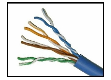

1. ¿Cuáles de las siguientes son dos características de un cable de fibra óptica? (Elija dos opciones)
Explique: El cableado de fibra óptica admite un mayor ancho
de banda que el UTP para distancias más grandes. La fibra
es inmune a la EMI y a la RFI, pero es más costosa, es más difícil
de instalar y requiere más precauciones de seguridad.
2. Con el uso del cable de cobre de par trenzado sin blindaje en una red, ¿qué causa crosstalk dentro de los pares de cables?
Explique: Crosstalk es un tipo de ruido o interferencia que se produce cuando la transmisión
de la señal en un cable interfiere con otro cable. Cuando la corriente
fluye a través de un cable, se produce un campo magnético. El campo magnético
producido interconectará la señal transportada en el cable adyacente.
3. ¿Qué tipo de cableado se muestra?
Explique: El cableado de red incluye diferentes tipos de cables:
Consta de cuatro pares de hilos codificados por colores que están trenzados
entre sí y recubiertos con un revestimiento de plástico flexible.
STP utiliza cuatro pares de hilos. Cada uno de estos pares está
empaquetado primero con un blindaje de hoja metálica y, luego, el conjunto se
empaqueta con una malla tejida o una hoja metálica.
El cable coaxial utiliza un conductor de cobre y una capa de
aislamiento plástico flexible rodea el conductor de cobre.
El cable de fibra es una un vidrio flexible, extremadamente delgado y transparente
rodeada de aislamiento de plástico.
4. Además de la longitud del cable, ¿cuáles son los otros dos factores que podrían interferir en la comunicación por cables UTP? (Elija dos opciones)
Explique: Los medios de cobre se utilizan de manera extensiva en las comunicaciones de red. Sin embargo, estos medios están limitados por la distancia y la interferencia de señal. Los datos se transmiten por cables de cobre como impulsos eléctricos, que son susceptibles a la interferencia de dos orígenes:
Interferencia electromagnética (EMI) o interferencia de radiofrecuencia (RFI): las señales de EMI y RFI pueden distorsionar y dañar las señales de datos que transportan los medios de cobre.
Crosstalk: se trata de una perturbación causada por los campos eléctricos o magnéticos de una señal de un hilo a la señal de un hilo adyacente.
5. ¿Qué tipo de cableado se muestra?

Explique: El cableado de red incluye diferentes tipos de cables:
UTP Consta de cuatro pares de hilos codificados por colores que están trenzados entre sí y recubiertos con un revestimiento de plástico flexible.
STP utiliza cuatro pares de hilos. Cada uno de estos pares está empaquetado primero con un blindaje de hoja metálica y, luego, el conjunto se empaqueta con una malla tejida o una hoja metálica.
El cable coaxial utiliza un conductor de cobre y una capa de aislamiento plástico flexible rodea el conductor de cobre.
El cable de fibra es un vidrio flexible, extremadamente delgado y transparente rodeada de aislamiento de plástico.
6. ¿Cuáles son los dos dispositivos que comúnmente afectan las redes inalámbricas? (Elija dos opciones)
Explique: La interferencia de radiofrecuencia (RFI, Radio Frequency Interference)
es la interferencia causada por los trasmisores de radio y otros
dispositivos que transmiten la misma frecuencia.
7. ¿Cuáles dos instrucciones describen los servicios proporcionados por la capa de enlace de datos? (Escoja dos opciones)
Explique: La capa de enlace de datos del modelo
OSI se divide en dos subcapas: la subcapa de control de
acceso al medio (MAC) y la subcapa de control de enlace
lógico (LLC). LLC forma una trama de la PDU de capa de red en
un formato que se ajusta a los requisitos de la interfaz de red y
los medios. Una PDU de capa de red puede ser para IPv4 o IPv6. La sub-capa
MAC he MAC define los procesos de acceso al medio que realiza el hardware. Gestiona
el acceso de trama a los medios de red de acuerdo con los requisitos de señalización física
(cable de cobre, fibra óptica, inalámbrica, etc.)
8. ¿Cuál es la función del valor CRC que se encuentra en el campo FCS de una trama?
Explique: El valor CRC del campo FCS de la trama recibida se compara con el valor
CRC calculado para verificar la integridad
de dicha trama. Si los dos valores no coinciden, se descarta la trama.
9. ¿Qué contiene el tráiler de una trama de enlace de datos?
Explique: El tráiler de una trama de enlace de datos contiene
la información de detección de errores pertinente a la trama incluida
en el campo FCS. El encabezado contiene información de control, como el direccionamiento,
mientras que el área que indica la palabra “data” (datos) incluye los datos, la PDU de la capa
de transporte y el encabezado IP.
10. ¿Cuál de estas afirmaciones describe una característica de los campos de encabezado de la trama de la capa de enlace de datos?
Explique: Todos los protocolos de capa de enlace de datos encapsulan
la PDU de la capa 3 dentro del campo de datos de la trama.
Sin embargo, la estructura de la trama y los campos contenidos en
el encabezado varían de acuerdo con el protocolo. Los distintos protocolos
de capa de enlace de datos pueden utilizar campos distintos, como prioridad/calidad
de servicio, control de conexión lógica, control de enlace físico, control del flujo y
control de congestión.